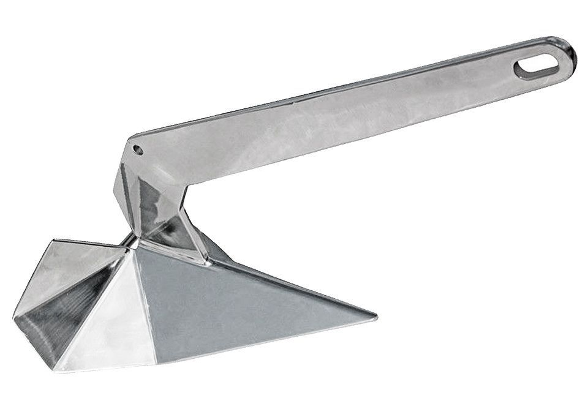
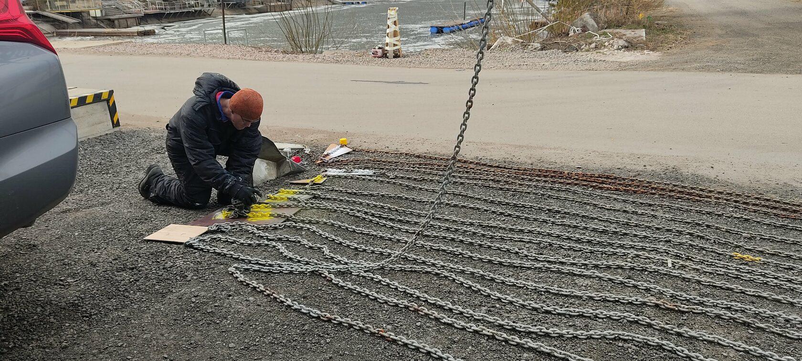
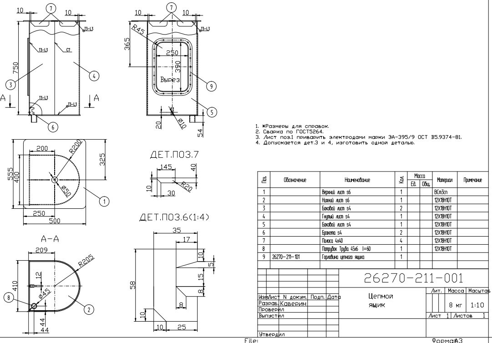
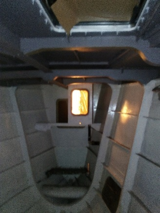
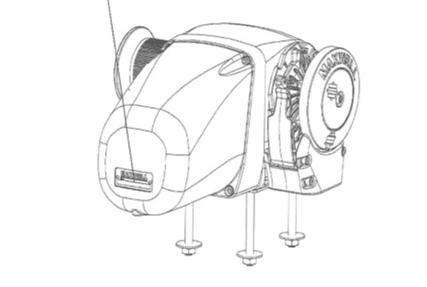
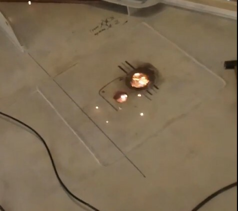
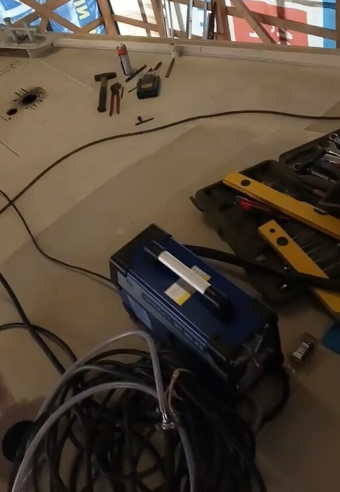
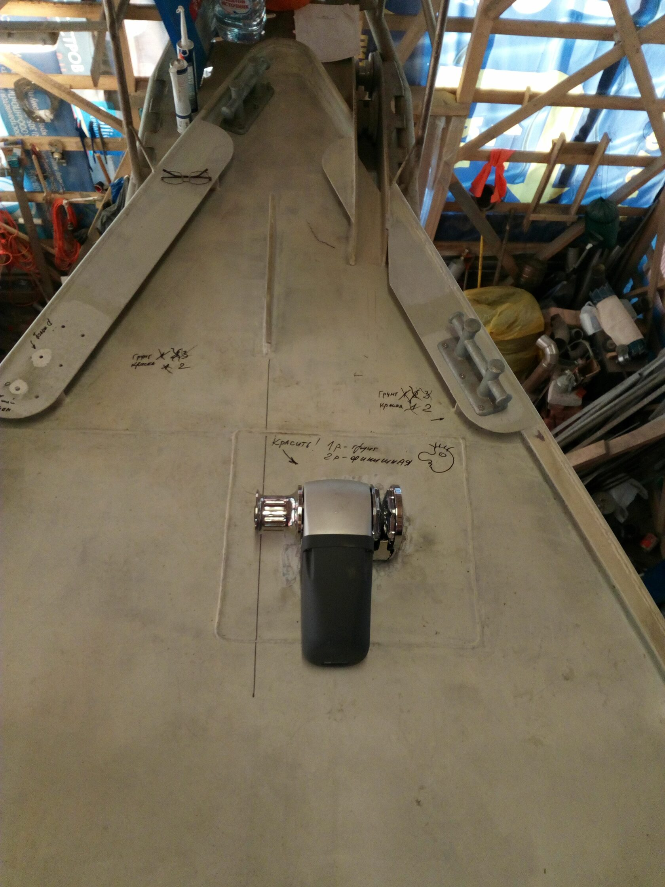
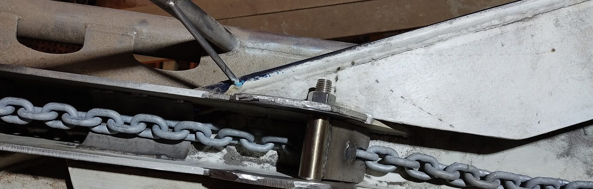

11.02.2024
5. Якорное устройство
По моему наблюдению многие лодки редко стоят на якорях в наших краях. Если на гонку, то вышли, погонялись, вернулись в порт, значит якорь ни к чему. А если идти от марины к марине, то тоже не особо нужен. Разве что, как аварийное устройство при отказе двигателя. Но наш опыт путешествий на яхте Катти был иным. На якоре стояли часто и помногу. Мы имели на Катти один становой якорь Брюса, весом 35 кг и два верпа – 20 кг и 10 кг соответственно. Кстати, однажды при съемке с мели на течении потребовались все три якоря. Якорь Брюса показал себя очень хорошо. Пополз один раз за всю практику в финских шхерах при сильном ветре, да и грунт был, судя по всему, плита. В общем, накопился разнообразный опыт, а с ним пришло и понимание важности устройства, поэтому якорное устройство на Эридане делали с особым вниманием. Доверившись одной из многочисленных приближенных методик выбора якоря, я остановился на 35 килограммовом якоре типа «Дельта», самый распространенный, пожалуй, на сегодняшний день, в качестве цепи – оцинкованная десятка (закуплено 100 метров). Две навигации показали надежность якоря «Дельта». В качестве верпа на Эридане еще имеется 20-килограммовый «Брюс».

На цепи нанесли метки краской разного цвета через каждые 10 метров, чтобы было легче контролировать длину вытравленной цепи.

Цепной самоотливной ящик был спроектирован и сварен, что называется, по месту. У Брюса (конструкторского бюро) проработок не было, в этом и многом другом нам помог наш друг Максим Каверин. Сам цепной ящик из нержавейки, и пришлось положить лист нержавейки на палубу под него.
К сожалению, оказалось, что влезает в него не более 80 метров цепи. Маловато, но что делать. При необходимости придется наращивать.


Ну и самое главное – то чего не было на Катти – электрический брашпиль Максвелл HRC10. Учитывая больные спины многих членов экипажа, работающий электрический брашпиль – это просто счастье!

Для установки брашпиля потребовалось делать отверстия в листе обшивки палубы толщиной 5 мм, причем листа нержавейки.

И тут я не отказал себе в удовольствии попробовать плазменную резку.

Как говорится, семь раз отмерь – один отрежь! Как ни странно, не промахнулись.

Долго думали, как вывести на палубу пульт управления брашпилем. Все идеи, связанные со сверлением сквозных отверстий в палубе и установкой кнопок не нравились. Это казалось ненадежной схемой. Помучившись, остановились на несколько неудобном, но надежном варианте (как нам пока кажется). Пульт хранится в носовой каюте. При необходимости открывается портлайт в носовой каюте, пульт на длинном кабеле передается на палубу, якорь поднимается или опускается. Пульт возвращается в каюту. Как говорится, дешево и сердито. Палубные кнопки не начнут течь, их не свернут в шторм, их контакты не закиснут от морской воды.
При необходимости быстрой отдачи якоря можно пульт не использовать. Для этого раздается стопор брашпиля (стандартной ручкой от лебедки) и якорь летит на дно под собственным весом и весом цепи. Электрическая составляющая отсутствует полностью, нужен только один испуганный матрос. А вот что касается выбрать якорь без электричества, то тут уже намного сложнее. Теоретически это возможно и даже предусмотрено создателями брашпиля. Только для этого нужна хитроумная рукоять для лебедки, а она не прилагалась. Пока решение этого вопроса отложено. Кстати, сейчас брашпиль вовсю эксплуатируется и для подъема якоря на борт и для подъема человека на мачту.
Цепь контрится стопором на палубе.

Вот так просто. Но сначала тоже были поиски и раздумья, а потом – бац – и пришла идея.